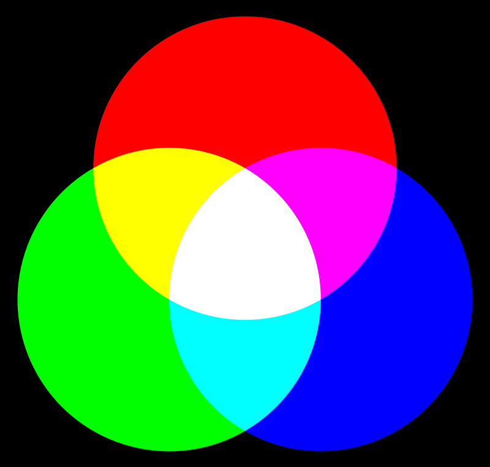

Synthèse des couleurs
Il est possible de fabriquer des couleurs à partir d'uniquement trois couleurs dites primaires. Par exemple, le noir est l'absence de toute couleur et le blanc est le mélange de toutes les couleurs. Il existe cependant deux synthèses possibles :
- en partant d'une feuille blanche et en retirant des couleurs : c'est la synthèse soustractive
- en partant d'un écran noir et en ajoutant des couleurs : c'est la synthèse additive
Synthèse soustractive
Une matière est bleue, parce qu'elle absorbe (elle emprisonne) toutes les couleurs sauf le bleu, qu'elle réfléchit. En mélangeant les matières (comme de la peinture, par exemple), on enlève différentes couleurs de la lumière blanche et on en laisse d'autres.
Trois couleurs primaires suffisent pour créer toutes celles qui sont visibles par l'œil humain : le cyan (une sorte de bleu ciel), le jaune et le magenta (une sorte de rose foncé)
En mélangeant à part égale deux de ces trois couleurs primaires, on obtient les couleurs secondaires : le rouge, le vert et le bleu.
Si on mélange ces trois couleurs, on devrait obtenir du noir (toute la lumière est absorbée). Mais ce n'est pas aussi simple, car en mélangeant les matières, une peinture jaune, par exemple, on les dilue (elles sont moins concentrées) et elles laissent échapper un peu de couleur. C'est pour cela qu'on utilise aussi du noir, pour assombrir les teintes.
Cette méthode de synthèse des couleurs est utilisée :
- par les peintres
- en imprimerie (et notamment dans les imprimantes)
Synthèse additive
Lors de la synthèse additive, on ajoute des faisceaux de lumière colorés.
La synthèse additive utilise généralement trois lumières colorées : une rouge, une verte et une bleue (RVB ou RGB en anglais pour red, green, blue). L'addition de ces trois lumières colorées en quantité suffisante donne du blanc.
En mélangeant à part égale deux de ces trois couleurs, on obtient comme couleurs : le cyan, le magenta et le jaune.
Cette méthode de synthèse des couleurs est utilisée par les projecteurs, les écrans de télévision ou d'ordinateur.